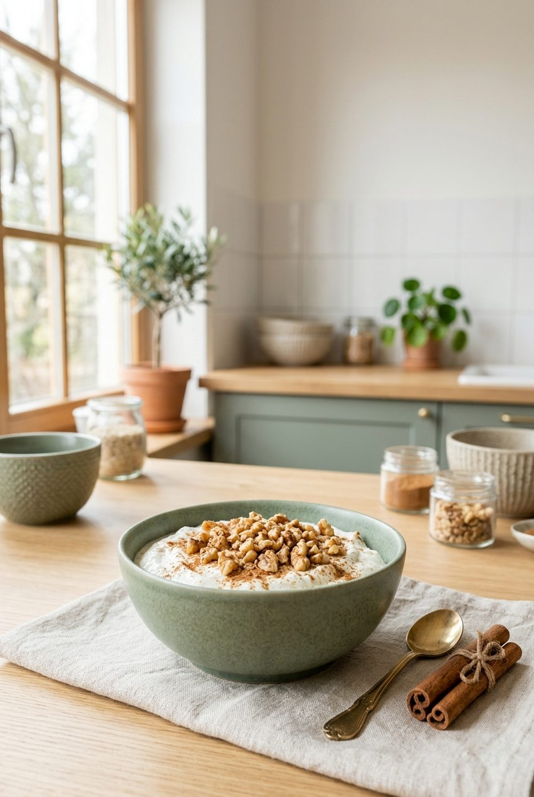

Frühstück · vegetarisch
Skyr mit Walnüssen und Zimt
Drei Zutaten, kein Kochen und richtig viel Eiweiß – cremig, nussig, zimtig.

Nährwerte pro Portion
Eiweiß24 g
Ballaststoffe1 g
Zutaten für 1 Portion
- 200 g Skyr
- 20 g Walnüsse
- ½ TL Zimt
- 1 TL Honig (nach Wunsch)
Enthält: Milch, Schalenfrüchte. Nährwerte berechnet mit dem Bundeslebensmittelschlüssel (BLS 4.0), 294 kcal · 12 g Kohlenhydrate · 16 g Fett pro Portion.
Zubereitung
- Skyr in eine Schale geben und glatt rühren.
- Walnüsse grob hacken und darüberstreuen.
- Mit Zimt bestäuben und nach Wunsch mit etwas Honig beträufeln.
Mehr aus der App
Dieses Rezept stammt aus der WellANNI-App (Foto KI-generiert). Dort findest du über 200 geprüfte Rezepte, planst deine Woche für den ganzen Haushalt samt Einkaufsliste und siehst, was dein Teller schon geliefert hat.
WellANNI App holenPassende Kollektion: Echtes Essen